STEP 01
DMI 素材
选可改造的原始场景，
确定画面的基础构图与氛围。
LID 设计团队
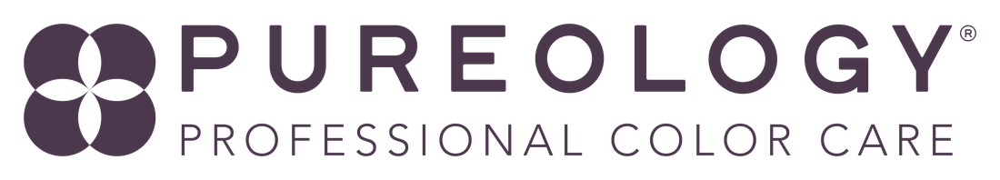
02 / RESULT FIRST
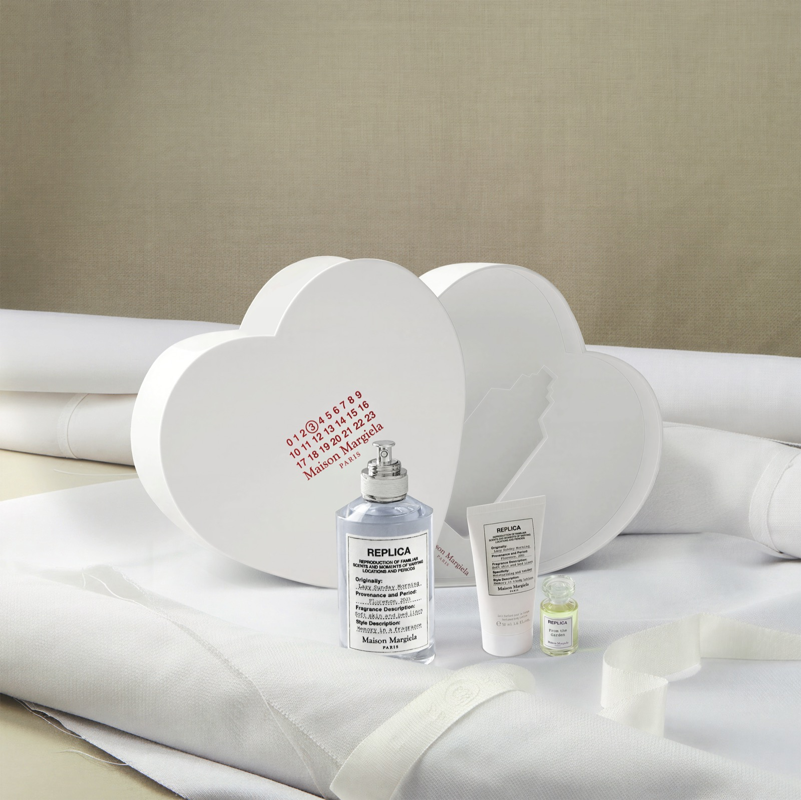
03 / TEAM CONTEXT
素材数量和质量都在增加，但设计时间没有增加。
04 / OLD WORKFLOW
选可改造的原始场景，
确定画面的基础构图与氛围。
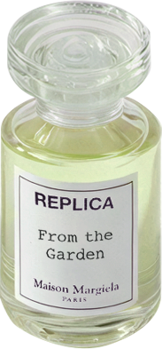
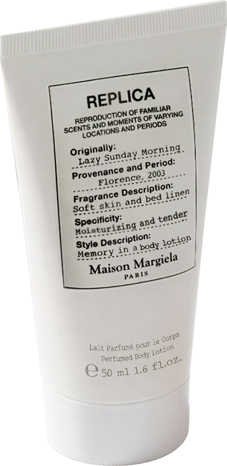
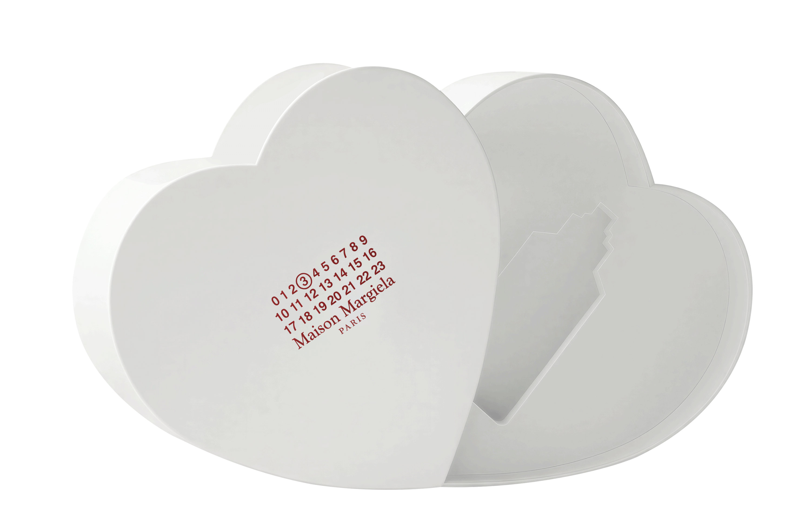
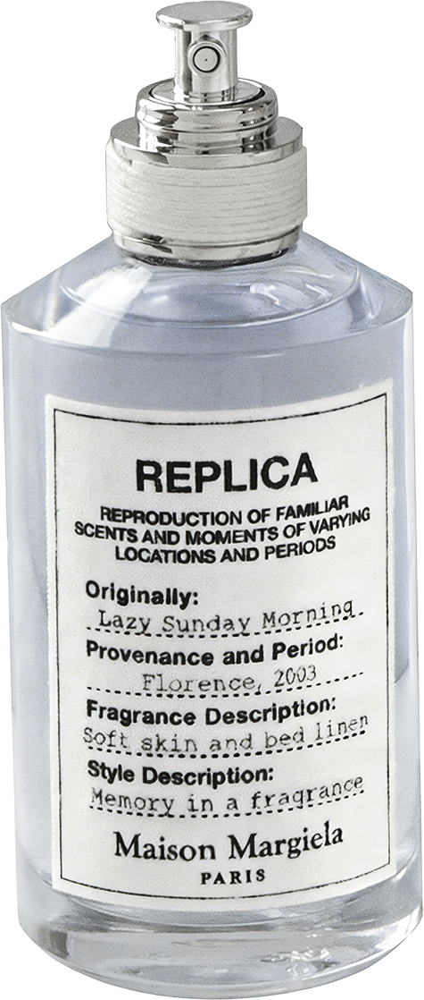
从素材库、渲染或拍摄中准备礼盒与产品图，这是旧流程的耗时关键。

将产品融入场景，统一透视、光影、质感与细节。
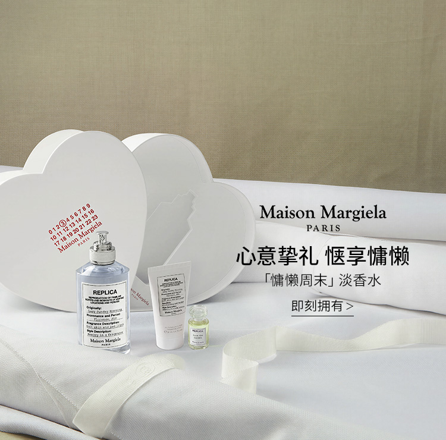
完成各点位尺寸适配，
输出并上线最终推广素材。
05 / FROM RANDOM TO CONTROLLED
直接生成容易得到比例失真、结构错误和构图混乱的废片；用产品、礼袋白模快速搭好画面，能在生成前锁定比例、角度和透视。

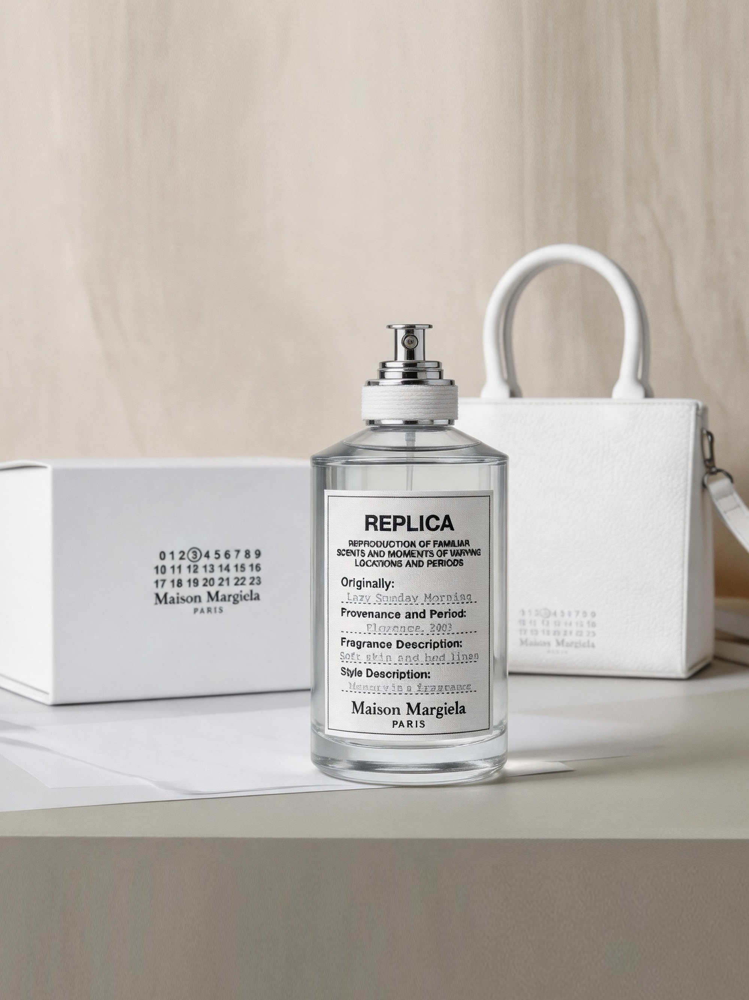

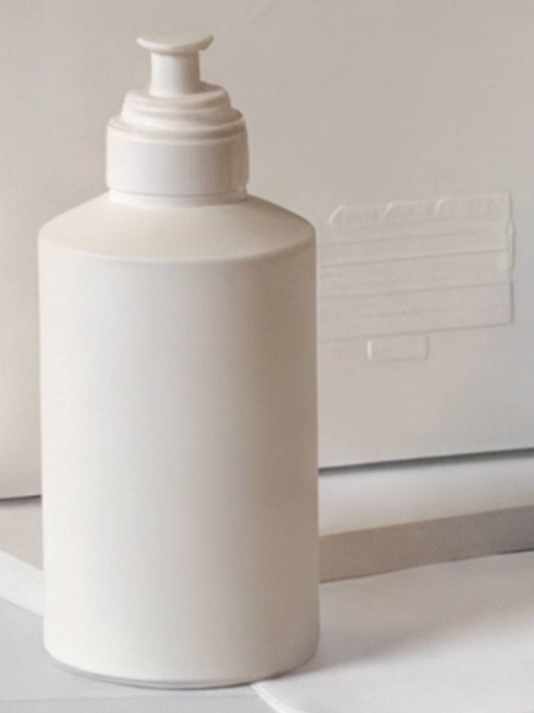
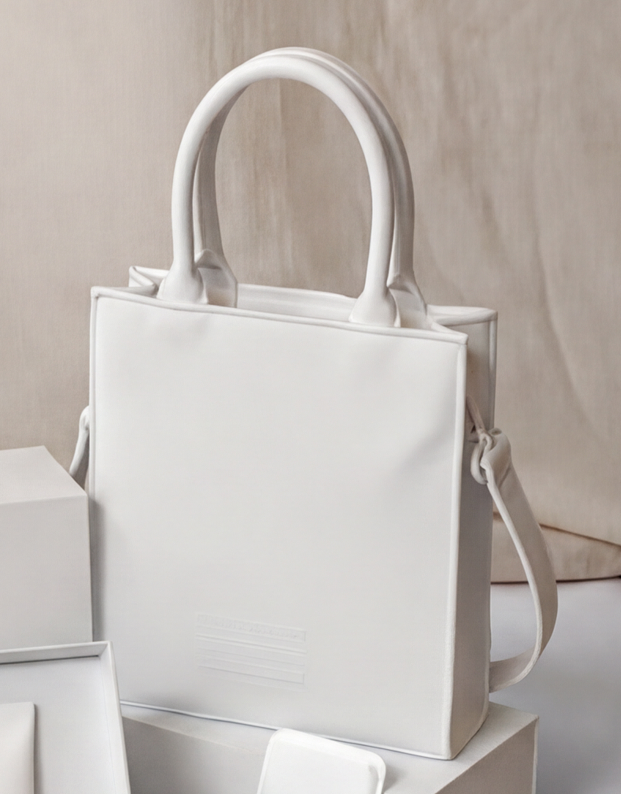
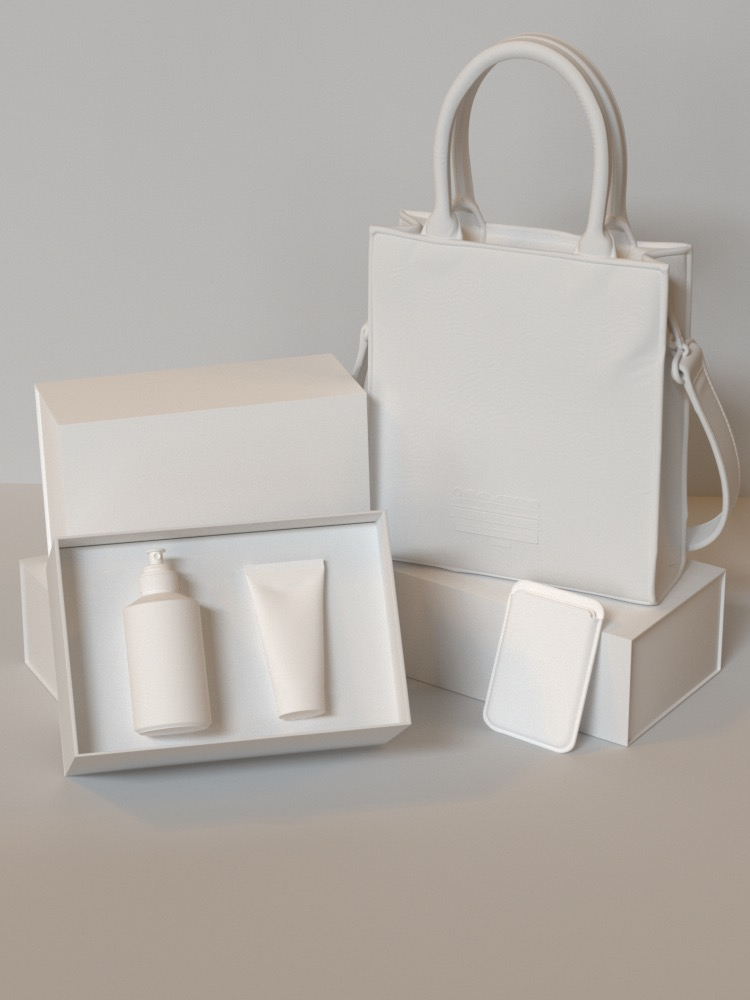
白模构图更快先判断画面关系，再进入 AI 渲染，舍弃反复抽卡。
06 / A QUESTION
在这套方法里，白模无需精细化。
C4D 建白模产品约 20 分钟。
→AI 建白模产品约 5 分钟。
07 / MATERIAL SCAN
单图局部渲染，精准不变形


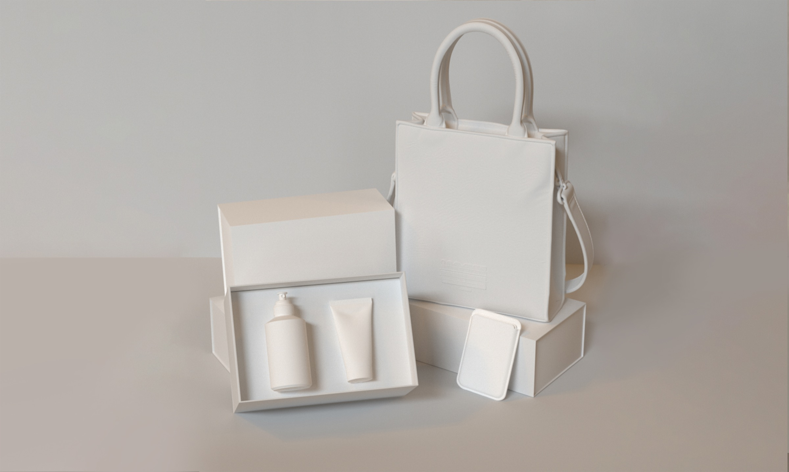
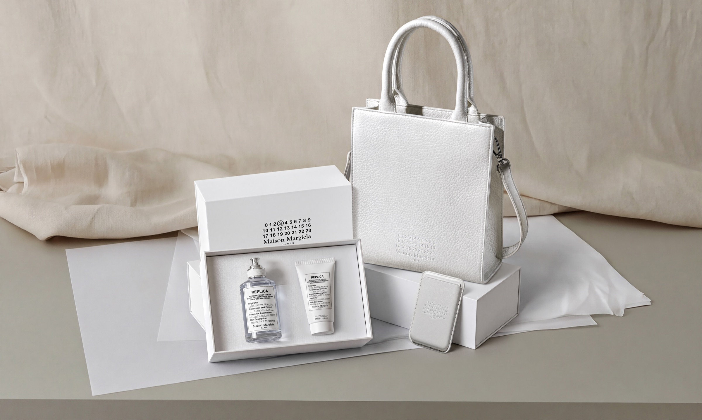
与以前的方法相比，整体材质渲染速度从1H提升到10分钟左右。
08 / THE BRIDGE
多了之前完全没有的设计素材
下一步研究的是迭代的关键，如何把工作模式循环起来？
10 / DATA TO INSTRUCTION
把思考分析的工作给到AIGC，降低制作所需的专业力，无需非常精通数据分析的设计也可胜任。
11 + 12 / FOUR ROUNDS
第一步选轮次，第二步查看每张图片的展现量、点击数与 CTR，第三步揭示当轮最高值和四轮汇总。综合 CTR 平均值从 2.4% 提升至 2.9%，单图最高值从 2.7% 提升至 4.5%。
选择一个轮次，展开该轮推广图和逐图数据。
当前结果用于说明方法在四轮测试中呈现改善趋势。如需得到更严格的结论，还需补充各轮曝光量、点击数、投放周期和变量记录。